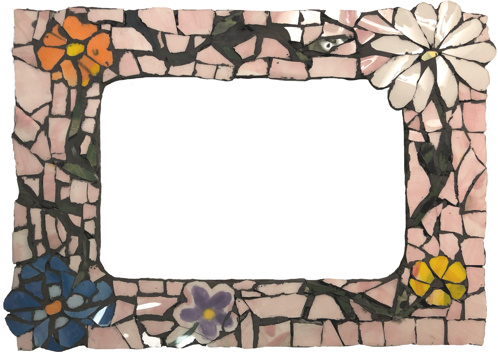

a second life to your broken ceramics
We are designers focused on contributing to building a circular economy through sourcing our materials from disposed ceramic waste. We wanted to reimagine how materials can be used at different stages of its lifecycle. by piecing together these broken pieces, we hope to challenge what brokenness is, and promote this sentiment to reject consumerist culture and reflect on our attitudes towards disposal.
Get started